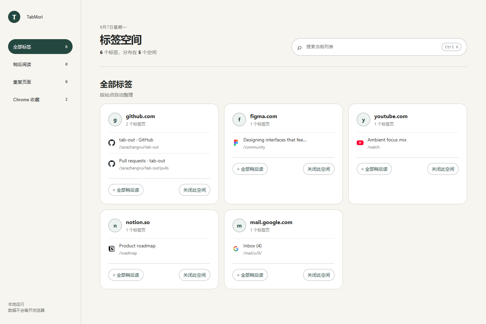

按网站分组
Group opened tabs by domain so the page is easier to scan.
TabMori 是一个干净、轻量的 Chrome 新标签页插件。它会按网站整理标签页，支持搜索当前标签和收藏夹，帮你更快找回正在用的页面。
A clean Chrome new tab extension for organizing too many open tabs, searching bookmarks, and reducing duplicate pages.

TabMori keeps your tabs grouped, searchable, and easier to close when they are no longer needed.

保留最常用的动作，不把新标签页变成另一个复杂仪表盘。
Group opened tabs by domain so the page is easier to scan.
Search current tabs and Chrome bookmarks from the same place.
Jump back to existing tabs and highlight duplicate pages.
Save pages for later without mixing them with browser bookmarks.
Close a group when that context is finished.
No account, no backend, no analytics, no external API.
现在先通过 ZIP 安装。Chrome 本地插件需要开启开发者模式。
Unzip TabMori.zip into a normal folder.
Open chrome://extensions in Google Chrome.
Turn on Developer mode in the top-right corner.
Click Load unpacked and select the unzipped folder.
不要直接选择 ZIP 文件。Chrome 需要加载包含 manifest.json 的解压文件夹。Do not select the ZIP directly.